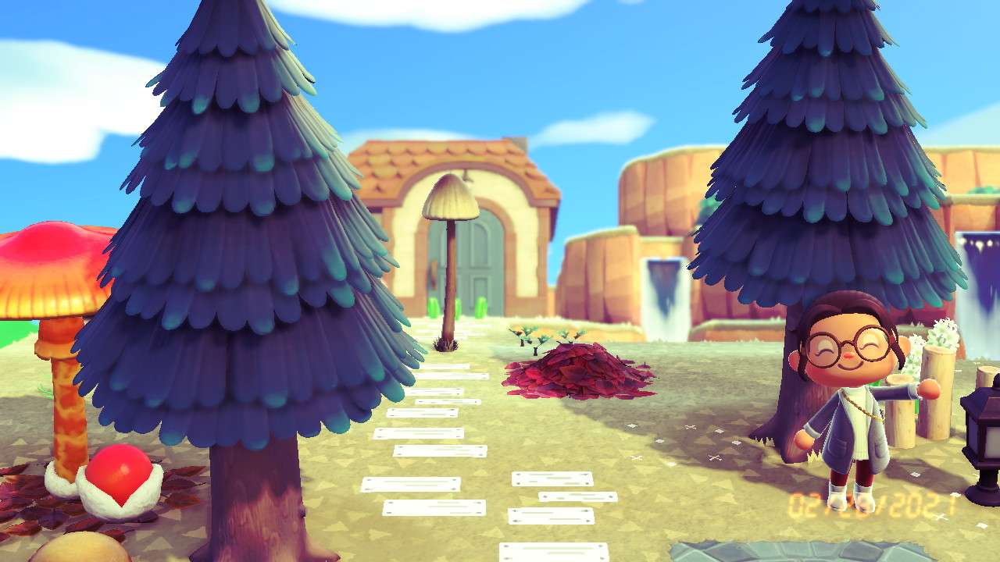

-RECOMMENDATIONS FOR YOU-
I'll recommend games for some genres and subgenres listed on the genre section of this site that I've played myself. I'll give a brief explanation of the game, the gameplay, and why I enjoy it. Maybe you'll find something you enjoy!
ACTION/PLATFORMER
The Messenger
One of the most fun platformers I've ever played, and certainly one of the most innovative. The switch between graphical styles (and with it, musical fidelity) is a truly fascinating game mechanic to play with. It makes the ambiance of this game all the more alluring.
The Messenger (the character) standing in the Bamboo Creek
ACTION/FIGHTING
Super Smash Bros. Ultimate
Really, any game from the Super Smash Bros. series applies here, but I've had the most fun with Ultimate. It's a great party game and has brought me endless joy messing about with my friends. An absolutely worthwhile pick, particularly if you've got friends willing to play with you.
All of the Smash Ultimate characters standing on a cliffside
ACTION/BEAT 'EM UP
Streets of Rage 4
I grew up playing Streets of Rage 2 with my dad, so getting this new game was a return to form with modern polish. This game proves that there are still game developers out there willing to stay true to a series while still giving a new game in a series its own identity.
Official Streets of Rage 4 art featuring Blaze, Axel, Cherry, and Adam
ACTION-ADVENTURE
The Legend of Zelda: Breath of the Wild
This game is special to me, so it gets its own spread. Partially because it's tied for my favorite game of all time, but also because I can share all the pictures I've taken in the time I've spent playing it.
It's beautifully detailed, the story is engaging but non-linear, and its unique physics engine leave the game chock full of secrets to find (whether developer-intended or not). The map is unusually and incredibly vast, to a scale that I truly believe any other developer should consider ridiculous. Somehow, Nintendo and the Zelda team did it right. The world has its empty spaces, its spaces full of secrets, and its beautiful in-betweens. It has engaging and varied NPCs and wildlife that interacts with the world, making it feel knitted together and concrete.
I have absolutely no idea how a even team of some of the most creative people on the planet made something this special, but they did it and did it well. I aspire to make something this genre-defining one day. There is truly nothing like The Legend of Zelda: Breath of the Wild.
This game is a masterpiece. It's a joy to go back through this game every time I do.
Link standing on the highest point of the Great Plateau, overlooking the Bridge of Eldin
Link standing on the Great Plateau, looking out over greater Hyrule and toward Dueling Peaks
Link reclaiming the Master Sword
Link looking out toward the Faron region
Link and Zelda looking up toward Hyrule Castle

A view of greater Hyrule from a Sheikah tower
My character (hereafter referred to as 'Minni') wearing a fall-themed outfit, waving from within her pumpkin farm
Minni proudly sitting in a recently built pink floral courtyard
Minni dressed as an old-fashioned prairie woman outside of her home
Minni on her way to visit a friend, Pashmina
SIMULATION/LIFE
Animal Crossing: New Horizons
This isn't a favorite game in the way Breath of the Wild is, but it's still a game I enjoy and have put a lot of time into.
This game is cheerfully empty upon beginning, its blank-slate-ness complex in its potential. The further into the game you get, the more you see it's true colors. It's idyllic, quiet, and enjoyable, the perfect combination of slow-paced and relaxing with unhurried tasks to complete. The art style is adorable, the NPCs (non-playable characters) whom you can befriend are lovely, and the days come and go as they do in real life. It is a game built for play, but it fosters peace.
Quite like Breath of the Wild, it is positively wonderful for taking pictures in.
SIMULATION/MANAGEMENT (FARMING)
Stardew Valley
This is the game that ties Breath of the Wild for my favorite. It sits at the top of my list, paralleled by one other game for a reason.
It's idyllic, quiet, and enjoyable, the perfect combination of slow-paced and relaxing with unhurried tasks to complete. The difference between this and Animal Crossing is worlds between, though. The main focus of this game is technically farming, but there's also extensive mining, exploration, story via townsfolk interaction, decoration, and upgrading systems. Each NPC is funny and unique with their own quirks (some more than others). The Valley townsfolk in particular feel like fleshed-out, real people with distinct personalities. Getting to know each one is a treat, and it's fully worthwhile. Getting to know the land on which your grandfather's old house sits is another treat altogether. It's called a farm, sure, but it isn't really a farm until you put your stamp on it. Until you arrive, it's just land where a farm used to be. It's up to you to decide what it becomes. It's almost a sandbox game when you step out your front door. A world of possibilities.
There are hundreds of things to do in the game. Thousands, if you have an imagination. You'll be in the shallow end of this pool and not realize you've swam down to the deep end 50 hours later.
Though this game is tied with BotW for my favorite, I have put well over 2x the hours into this game. It's worryingly wonderful how much time I've spent in this world. It's taken me through the best and worst of times, like the ever moving waves of the sea. Stardew Valley has always been there for me. Perhaps it will be for you, too.
My longest-running Stardew Valley farm, circa early 2022
A sloping, beautiful house in the forest, built painstakingly from rich mahogany wood and decorated lavishly with souveniers from around the world
ACTION-ADVENTURE/SANDBOX
Terraria
Full of passion, love, and creepy cave noises at every turn, Terraria has been a blast for me to play through every time. Each time I dive into this game it's with new fervor, like I've never played before. With each playthrough I impose upon myself a new challenge, a new difficulty, a new way to play the game.
Terraria is anything but peaceful, particularly during the first few hours when the going is really tough, but forging a path to peace is half the fun. Eliminating all threats and living an uninterrupted life on the surface is a painstaking task that will well-earn you the right to stop and smell the roses when you achieve it.
It's also a fantastic game for those with a creative eye, hundreds of options for coloring, lighting, shadows, furniture and decorations at your fingertips. Terraria is truly a sandbox, a boss-rush game with elements of every other genre present. A wonderful time every time.